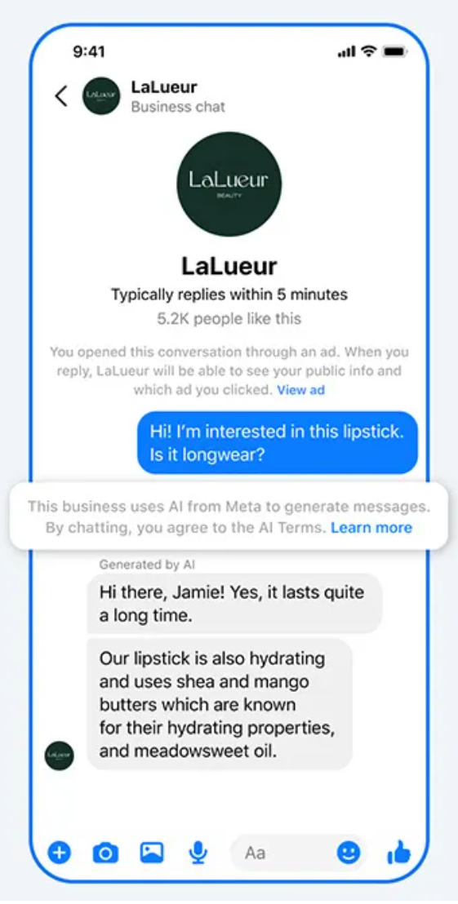
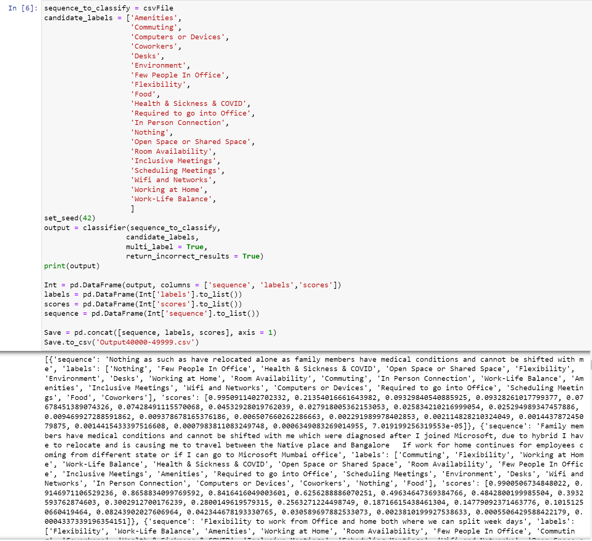
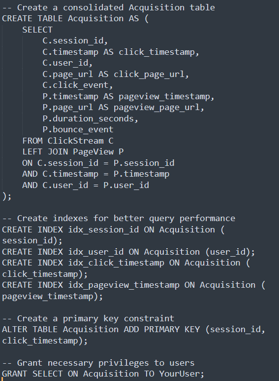
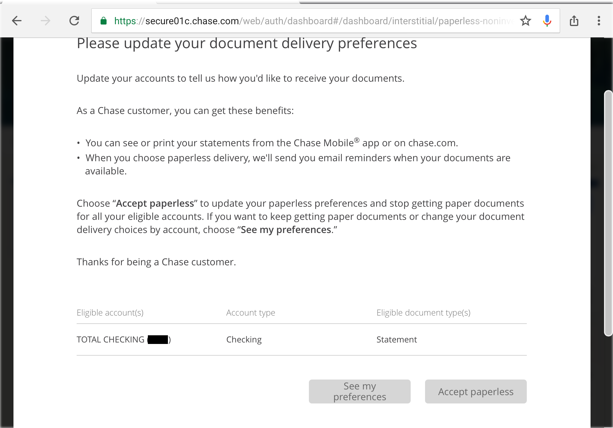
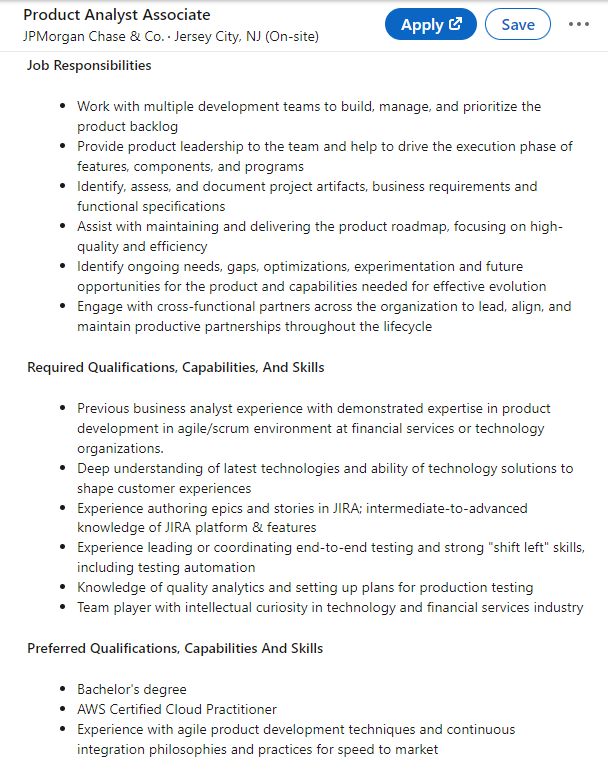

Case Studies & Projects
Founding Research to Resolve Privacy and Safety Concern in Digital Identity Verification
Project Overview
As Founding Researcher in a blank-slate environment on a 3-person core team, I architected the research strategy and validity frameworks for a 0-1 civic advocacy platform utilizing blockchain digital IDs. My mandate was to translate user behavioral insights directly into technical protocols, UI specifications, and launch validation frameworks alongside engineering and product design.
Diagnosing Trust Hurdles
User research uncovered critical psychological barriers: users were hesitant to connect cryptographic identities to real-world advocacy without clarity on anonymity guarantees. I diagnosed onboarding drop-off points and collaborated with engineering to design transparent, user-facing cryptographic explanations, demystifying zero-knowledge concepts into intuitive trust cues.
Impact
By systematically aligning protocol security with user mental models, we significantly improved onboarding funnel conversion and unlocked successful multi-market pilot deployments across California and New York.
0-1 Trust Framework
0-1 Agentic AI Launch Gating & Global Vendor Operations
Project Overview
The main objective of this project was to research the value of AI-powered agentic business messaging as it transitioned from concept to execution, focusing on identifying areas of value for businesses on Messenger and Instagram. Understanding how AI could perform as a substitute for what had traditionally been human customer support interactions, like giving information about products, was critical particularly for small businesses that had very few employees.
Key Responsibilities
As the Quantitative UX Researcher, I led multinational alpha, beta and general availability studies combining survey data with platform interaction data. I managed the research process, including survey design, data analysis, and communicating findings to stakeholders. My approach involved close collaboration with qualitative researchers, providing them with user profiles and targeted outreach lists to ensure we spoke with the right participants.
Technical Approach
For data analysis, I utilized internal survey tools, SQL for data retrieval, and Python for manipulation, allowing efficient extraction of relevant information. When we encountered broken eligibility criteria for survey participants, I was able to recover the data by finding other criteria by which to check whether the user had interacted with an AI or a human. I determined whether the data was random or systemic, to help determine whether the data was still representative as well as to understand what the likely failure point was.
Working with the Data Engineering team, we identified and resolved these issues to maintain data integrity on future projects. To address data eligibility challenges that delayed our research timeline, I implemented survey weighting techniques ensuring our results represented target populations accurately. This critical step validated our findings across different user segments and allowed us to confidently present recommendations to stakeholders.
Impact & Findings
Through analysis of platform interaction data and survey responses, I uncovered key insights:
- Users don't have a worsened experience when interacting with the AI but do get much more timely responses
- Small businesses were able to increase the amount of work they can perform when they don't have to worry about customer support These insights directly influenced the deployment strategy, ultimately enhancing customer engagement and satisfaction.
Professional Growth
The project marked my first experience with a non-iterative research approach, teaching me valuable lessons about quickly bringing products to market to achieve relevance. I learned that prioritizing speed and responsiveness is essential for success in a rapidly evolving landscape. These insights will guide my future work as I apply these lessons to drive innovation and enhance user experiences in upcoming projects.

Eliminating Liquidity Barriers Across SMB Automated Campaigns
Challenge & Context
Within Meta's Small and Medium Business (SMB) advertising ecosystem, self-serve merchants face significant operational friction when launching and scaling campaigns. High interface complexity, confusing audience targeting options, and overwhelming budgeting controls led to frequent onboarding drop-offs, sub-optimal campaign setups, and premature ad spend abandonment.
To unlock advertiser growth and improve platform liquidity, Meta needed deep, actionable insights into where and why self-serve merchants were stalling during the campaign setup journey.
Mixed-Methods Research Strategy
I designed and executed an end-to-end mixed-methods research initiative to map the complete advertiser lifecycle and identify key UX and functional friction points:
- Quantitative Log Analysis: Analyzed behavioral telemetry and telemetry logs from thousands of advertiser sessions to pinpoint exact drop-off steps, configuration errors, and feature drop-out rates in the creation funnel.
- Qualitative Merchant Interviews: Conducted in-depth interviews with diverse SMB owners to evaluate mental models, risk perceptions around budget allocation, and pain points regarding audience targeting.
- Attitudinal Surveys: Deployed targeted in-product surveys to measure confidence levels, ease-of-use perception, and feature satisfaction during active campaign builds.
Key Research Findings & Strategic Recommendations
Our research revealed that SMB advertisers didn't lack marketing intent—they lacked confidence. Over-choice in targeting parameters created decision paralysis, while a lack of real-time feedback made merchants hesitant to commit advertising budgets.
I partnered directly with Product Managers, UX Designers, and Engineering squads to translate these findings into concrete product interventions:
- Smart Targeting Presets: Replaced granular manual targeting fields with AI-assisted preset audiences tailored to business verticals and localized demographics.
- Guided Setup Workflows: Streamlined the creation flow into progressive disclosure steps, reducing cognitive load and preventing user fatigue.
- Contextual Guidance & Tooltips: Designed dynamic tooltips and performance preview estimators that gave merchants real-time feedback on expected reach and ROI before launching.
Impact & Business Outcomes
By addressing core setup friction and simplifying targeting workflows, the team drove measurable gains across key platform metrics:
- Increased Adoption: Boosted adoption of self-serve targeting tools among newly onboarded SMB merchants.
- Accelerated Setup Velocity: Significantly reduced the average time required for merchants to build and publish an ad campaign.
- Sustained Liquidity & Retention: Lowered early campaign abandonment, driving higher long-term advertiser retention and sustained monthly ad-spend liquidity across Meta's ad ecosystem.
SMB Advertising Suite
Creating and Administering the Business Messaging Platform Survey for Facebook & Instagram
Project Overview & Scale
As the Quantitative UX Researcher for customer Business Messaging tracking, I led the implementation of a global research initiative designed to continuously monitor consumer sentiment across messaging platforms. The project tracked key metrics including value perception, relevance, and negative experiences associated with business messaging, serving as a critical guardrail against messaging overload. With hundreds of thousands of monthly responses spanning both Instagram and Messenger across priority markets, this project represented one of our largest-scale research efforts, providing visibility into global messaging trends and user sentiment.
Key Responsibilities & Technical Approach
My responsibilities included survey design, determining optimal invitation volumes, establishing data pipelines, and building comprehensive dashboards to visualize insights for stakeholders.
To effectively analyze the massive dataset, I utilized:
- Internal survey tools for data collection across multiple markets
- SQL for efficient data retrieval from our databases
- Python for sophisticated data manipulation and statistical analysis
- Interactive dashboards allowing stakeholders to filter by region, platform, and demographics
Impact & Future Direction
These insights directly informed critical product decisions, including the implementation of message frequency capping in high-volume markets and the optimization of delivery timing based on regional usage patterns. In the future, our hope is to use this abundance of data to understand what levers are able to be pulled to improve business messaging with a much longer understanding of effects.
Overhauling Microsoft's Hybrid Workstream Survey: Automated NLP Pipeline & Methodological Redesign
1. The Bottleneck: Manual Analysis of Unstructured Data
Microsoft's Hybrid workstream collected over 2,000 employee survey responses monthly to inform internal policies and product direction. Initially, analyzing open-ended text responses and compiling stakeholder updates was done completely by hand. This manual analysis was prohibitively slow and consumed significant time that could otherwise be spent on high-value research.
2. The Technical Solution: Automated NLP Pipeline
To resolve the speed barrier, I developed an automated data processing pipeline and fine-tuned a BART-large-MNLI zero-shot topic modeling solution to classify unstructured feedback automatically. Fine-tuning increased classification accuracy from 61% to 83%, drastically speeding up analysis and establishing consistent, objective weekly sentiment tracking.
3. The Deeper Realization: Structural Survey Flaws
While the NLP model successfully accelerated text processing, a fundamental issue persisted: open-ended responses were rarely utilized downstream by operational teams. The sheer ambiguity of open-ended text made it difficult for stakeholders to extract concrete, decisive actions, proving that automating an inefficient data source was only a partial fix.
4. The Systemic Redesign: Modular & Structured Data
Recognizing that the data collection method itself needed an overhaul, I redesigned the survey methodology. We transitioned from monolithic surveys with heavy open-ended text to a modular framework that served dynamic, targeted question subsets—reducing length from dozens of items to fewer than 12.
We shifted primary data collection to structured, closed-ended questions for quantifiable insights, while retaining an "Other" field to capture emergent qualitative nuances.
Key Achievements & Impact
- Automated NLP Classification: Boosted topic modeling accuracy to 83% and eliminated manual text sorting.
- Methodological Overhaul: Cut survey lengths to <12 items, significantly increasing completion and response rates.
- Actionable Intelligence: Replaced vague text responses with structured, decision-ready data for Microsoft leadership.

Upskilling Qualitative UX Researchers in Data & Scripting
Recognizing that qualitative researchers frequently waited on central engineering queues for basic data queries, I initiated and led a technical training curriculum teaching team members Python scripting, SQL data extraction, and statistical fundamentals. This endeavor aimed not only to empower team members with new technical skills but also to leverage these skills to boost productivity and the overall performance of our team.
Through hands-on workshops and 1-on-1 coaching, qualitative researchers learned to query and visualize their own respondent datasets independently, accelerating research turnaround times and fostering deeper cross-pollination between qualitative empathy and quantitative rigor.
A/B Testing & Data Engineering Chase's Acquisition Pipelines to Increase Monthly Revenue by $20M
Role & Responsibility
During my tenure at JPMorgan Chase, I spearheaded and supported a series of technical and analytical initiatives aimed at constructing robust data infrastructure, enhancing digital user experiences, and driving digital account acquisition across public and private portals.
Engineering the Acquisition Data Lake
To facilitate a unified tracking system, I led the technical initiative to construct a high-performance data lake utilizing behavioral clickstream data. Supporting Chase.com—one of the top 50 most visited U.S. websites with 800 million monthly visits and 6 billion page views—required optimizing an expansive database with prohibitively long query times and overly complex table joins.
I engineered an automated Teradata transformation script that streamlined the architecture, reducing the tables required to view an application journey from four to just one. This automation guaranteed data integrity and scalability while allowing multi-dimensional filtering across demographics, product types, and traffic sources. Analysts experienced a >90% reduction in query times, retrieving insights almost instantly rather than waiting hours.
Research Approach & A/B Testing
With scalable infrastructure in place, we conducted full-funnel A/B testing across owned advertisements and acquisition pathways. Unlike traditional siloed analyses that evaluated media clicks or application starts independently, our end-to-end approach tracked users from initial link exposure through final account opening. This prevented low-intent clicks and ensured tailored product placements aligned with user eligibility.
Key Initiatives & Achievements
- Engineered a unified digital acquisition data lake, cutting query times by over 90% and simplifying 4-table joins into a single structured view.
- Implemented personalized product recommendations driven by existing holdings and customer financial profiles.
- Revamped and streamlined product enrollment flows to minimize drop-off points.
- Executed continuous, rigorously tested incremental optimizations to ensure sustained performance improvements.
Business Impact
These infrastructure and UX enhancements delivered a 7% year-over-year increase in total account volume—driven primarily by deposit account growth—generating approximately $20 million in incremental monthly revenue.

Fixing Platform-Wide Sign-In Interstitials & Announcements Architecture
In my role at JP Morgan Chase, I played a pivotal part in identifying and addressing a critical issue related to the effectiveness of the "Announcements" feature which is intended to provide information on changes after a customer signs in. It began when I performed fundamental research to assess the feature's performance. What caught my attention was that the Announcements were consistently underperforming, falling far below the expected metrics. It became evident that a significantly lower number of users were actually seeing these Announcements, even though the feature was designed to reach everyone eventually. In some instances, the visibility rate for an Announcement was as low as 30%.
Upon digging deeper, I uncovered several key insights that shed light on the problem. First, I realized that all "Sign in interstitials," including "Announcements," were competing for priority in terms of display. Second, I discovered that the platform responsible for showcasing these interstitials wasn't under the jurisdiction of any internal team, resulting in a lack of controls and design guidelines. Third, a closer examination of other "Sign in interstitials" revealed a stark lack of design cohesion across the board. Lastly, I found that some of these interstitials were broken, repeatedly disrupting users instead of being dismissed after the initial display. User feedback in our Voice of Customer (VOC) channels confirmed that this issue was causing significant frustration.
To tackle this issue head-on, my team within the organization took charge of the "Sign in interstitials" platform. We implemented comprehensive design guidelines, ensuring consistency and effectiveness across all interstitials. Additionally, we fixed the broken ones, ensuring that they would function correctly and no longer disrupt users excessively. This initiative not only improved the user experience but also enhanced our ability to effectively communicate important announcements to our customers.

Recruiting & Onboarding Analytics Squad During the Great Resignation
During early 2022, our core analytics team experienced sudden attrition. I took on a role in re-expanding our team's capacity. Over the course of just three months, I successfully recruited and onboarded five new team members, effectively growing our team from three to eight members. This endeavor was not just about increasing headcount; it was about strategically identifying and bringing on board individuals who would not only fit seamlessly into our team culture but also excel in their roles.
To achieve this, I developed an objective criteria to evaluate potential candidates. This criteria encompassed both a behavioral portion of the interview process and a coding assessment. It was essential for us to assess not only technical skills but also interpersonal qualities that would contribute to a positive and productive team dynamic. Notably, each of these new hires not only successfully integrated into the organization but also demonstrated outstanding performance in their respective roles, consistently delivering valuable contributions to our team's success. All five of the team members that were hired were still in the organization adding value one year later, proving that the decisions made were the correct ones.
